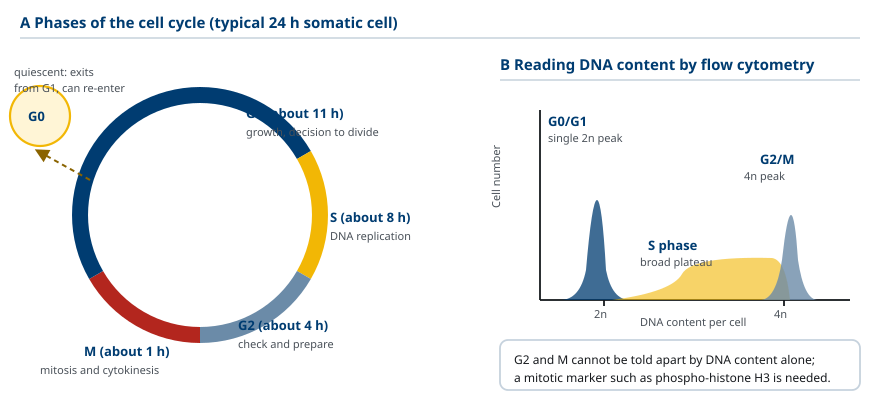
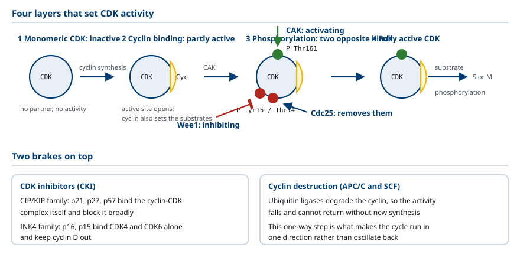
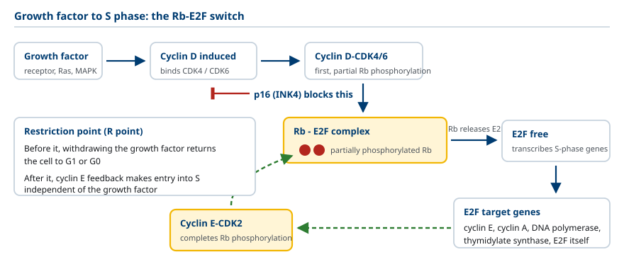
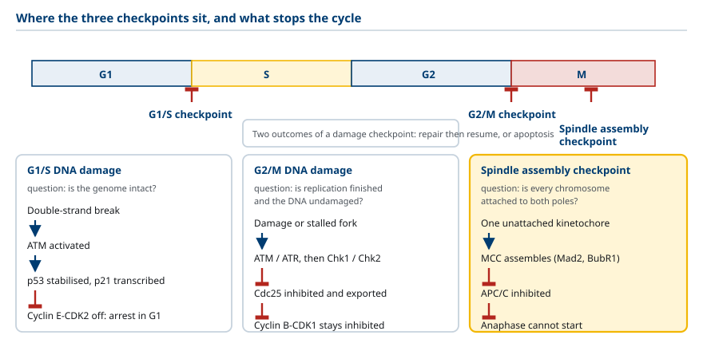
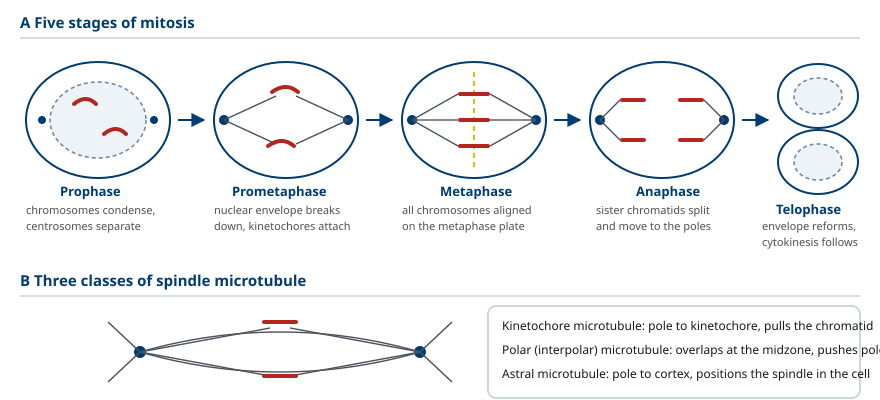
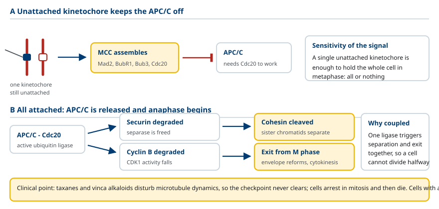
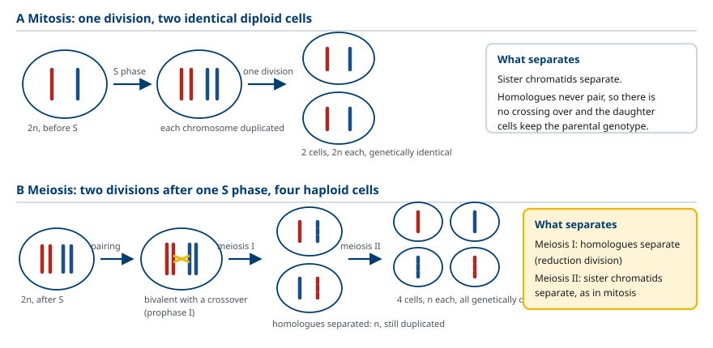

M01-W12-L01 · 인체일반생물학과 기초세포생물학
세포주기와 그 조절
The Cell Cycle and Its Regulation
학습목표
- 세포주기의 네 시기를 구분하고 각 시기에 일어나는 사건과 걸리는 시간을 설명한다.
- Flow cytometry의 DNA 함량 분포에서 각 시기의 세포 분율을 읽는다.
- MPF와 cyclin의 발견 실험을 서술하고 그 결과가 어떤 결론을 뒷받침하는지 밝힌다.
- Cyclin-dependent kinase의 활성이 cyclin 결합, 인산화, CKI, 분해의 네 층위로 조절되는 방식을 설명한다.
- G1/S, DNA 손상, spindle assembly 체크포인트의 감지 대상과 작동 기전을 각각 설명한다.
- 유사분열의 다섯 단계를 염색체와 방추사, 핵막의 변화로 서술한다.
- 감수분열이 유사분열과 다른 세 지점을 염색체 수와 재조합, 분리 방식으로 비교한다.
선수지식
- M01-W11-L02 세포 신호 전달 — 성장인자 수용체, RAS-MAPK와 PI3K 경로, 단백질 kinase의 작동 방식
- M01-W06-L03 DNA 복제 — replication origin, helicase, 복제 분기점
- M01-W09-L02 생체에너지: 자유에너지와 ATP — 인산화의 자유에너지와 비가역 단계의 의미
- M01-W10-L03 세포골격 — microtubule의 동적 불안정성, kinesin과 dynein
강의 구성
- 1. 세포주기의 네 시기와 그 측정
- 2. 세포주기 조절자를 찾아낸 세 가지 실험 계통
- 3. Cyclin과 cyclin-dependent kinase의 가족
- 4. CDK 활성의 네 층위 조절
- 5. G1에서 S로: 성장인자, cyclin D-RB-E2F와 restriction point
- 6. S기의 개시와 한 번만 복제되게 하는 장치
- 7. 체크포인트: 손상과 미완성을 감지해 주기를 멈추는 장치
- 8. M기의 진행: 유사분열의 다섯 단계와 mitotic kinase
- 9. Spindle assembly checkpoint와 anaphase의 개시
- 10. 감수분열과 유사분열의 차이
1. 세포주기의 네 시기와 그 측정
세포가 둘로 나뉘려면 유전체를 정확히 한 벌 더 만들고, 그 두 벌을 두 딸세포에 하나씩 넘겨야 한다. 이 두 사건은 섞일 수 없다. 복제가 끝나기 전에 분리를 시작하면 염색체가 부서지고, 복제가 두 번 일어나면 염색체 수가 늘어난다. 진핵세포는 이 두 사건을 시간 축에서 떼어 놓고, 그 사이에 준비 구간을 둔다. 그 결과가 세포주기(cell cycle)의 네 시기다.
- S phase(synthesis): DNA가 복제된다. 체세포의 DNA 함량이 2N에서 4N으로 늘어난다. Histone 합성과 centrosome 복제도 이 시기에 일어난다.
- M phase(mitosis): 복제된 염색체가 둘로 갈라지고(mitosis) 세포질이 나뉜다(cytokinesis).
- G1 phase(gap 1): M기 종료부터 S기 시작까지. 세포가 자라고, 외부 신호를 읽어 다음 주기에 들어갈지 결정한다.
- G2 phase(gap 2): S기 종료부터 M기 시작까지. 복제가 완전히 끝났는지 확인하고 분열 장치를 준비한다.
G1, S, G2를 합쳐 interphase라 부른다. 배양 상태의 전형적인 사람 세포는 한 주기가 약 24시간이고, 그 가운데 G1이 약 11시간, S가 약 8시간, G2가 약 4시간, M이 약 1시간이다. 전체 시간의 95% 이상이 interphase이므로, 현미경으로 세포 집단을 보면 분열 중인 세포는 소수다.
시기별 소요 시간은 고정되어 있지 않다. 변하는 것은 거의 전부 G1이다. 영양이 부족하거나 성장인자가 없으면 세포는 G1에서 주기를 빠져나와 G0라는 비분열 상태로 들어간다. 사람 몸의 대부분의 세포가 G0에 있다. 반대로 초기 배아의 세포주기는 G1과 G2가 거의 없어, 개구리나 바다성게 배아에서는 S와 M이 번갈아 반복되며 한 주기가 30분 이내로 짧아진다. 배아 세포는 난자가 쌓아 둔 물질을 쓰므로 자랄 필요가 없고, 그래서 성장에 쓰는 구간을 생략한다. 이 사실이 G1과 G2는 성장과 점검을 위한 구간이고, S와 M이 주기의 골격이라는 점을 보여 준다.
시기를 측정하는 표준 방법은 flow cytometry다. 세포를 DNA에 결합하는 형광 염료(propidium iodide 등)로 염색하고 한 개씩 레이저를 통과시켜 형광 세기를 재면, 세포마다의 DNA 함량 분포를 얻는다. 분포에는 2N 자리의 봉우리(G1), 4N 자리의 봉우리(G2와 M), 그 사이에 퍼진 구간(S)이 나타난다. 각 구간의 면적 비가 각 시기에 머무는 세포의 분율이고, 분율은 그 시기에 걸리는 시간에 비례한다. 다만 G2와 M은 DNA 함량이 같아 이 방법으로 구별되지 않는다. 둘을 나누려면 염색체 응축을 현미경으로 보거나 인산화된 histone H3처럼 M기에만 나타나는 표지를 함께 측정한다.

2. 세포주기 조절자를 찾아낸 세 가지 실험 계통
세포주기를 움직이는 분자는 서로 독립적인 세 계통의 실험에서 밝혀졌고, 세 결과가 같은 단백질로 수렴했다.
첫째, 효모의 온도 민감 돌연변이체. *Saccharomyces cerevisiae*와 *Schizosaccharomyces pombe*에서 특정 온도에서만 세포주기가 멈추는 돌연변이체를 모아 cdc(cell division cycle) 유전자로 분류했다. 돌연변이체마다 멈추는 지점이 정해져 있다는 사실이 중요하다. *S. cerevisiae*의 CDC28 돌연변이체는 START라 불리는 G1의 한 지점에서 멈춘다. 즉 하나의 유전자 산물이 주기의 특정 전환을 담당한다. *S. pombe*의 cdc2 돌연변이체는 G2에서 M으로 넘어가지 못해 분열하지 않고 계속 자라 길어진다. 반대로 wee1 돌연변이체는 너무 일찍 M기에 들어가 작은 세포가 된다. 이 두 돌연변이의 방향이 반대라는 점에서, Wee1이 Cdc2를 억제하는 쪽이라는 결론이 나왔다.
둘째, MPF의 발견. 개구리 난자는 meiosis의 중간 단계에서 멈춘 상태로 있다가 progesterone 자극을 받으면 성숙한다. 성숙한 난자의 세포질을 뽑아 멈춘 난자에 주입하면 수용 난자가 성숙한다. 주입한 것은 progesterone이 아니라 세포질이고, 호르몬 자극 없이도 성숙이 일어났으므로 세포질 안에 M기 진입을 지시하는 활성이 있다는 뜻이다. 이 활성을 MPF(maturation promoting factor, 뒤에 M phase-promoting factor)라 불렀다. MPF는 개구리에서만 작동하는 것이 아니라 포유류와 효모의 추출물에서도 같은 활성이 검출되었고, 이것이 세포주기 조절 장치가 진화적으로 보존되어 있다는 첫 근거였다. 뒤에 정제된 MPF는 두 단백질의 이형이합체였고, 그 가운데 kinase 소단위가 *S. pombe*의 Cdc2, 즉 Cdk1이었다.
셋째, cyclin의 발견. 바다성게 수정란에서 분열이 반복되는 동안 전체 단백질을 gel electrophoresis로 추적했더니, 대부분의 단백질 양은 일정한데 한 단백질만 각 주기마다 쌓였다가 분열 직후 사라졌다. 양이 주기에 맞춰 오르내리므로 cyclin이라 이름 붙였다. Cyclin은 MPF의 나머지 소단위였다. 즉 MPF는 Cdk1과 cyclin B의 복합체다.
세 계통이 하나로 모이면서 세포주기 조절의 기본 구도가 나왔다. 주기를 밀고 나가는 kinase는 양이 일정하고, 그 활성을 켜는 짝단백질의 양이 주기적으로 변한다. 이 설계는 kinase를 새로 만들고 없애는 것보다 빠르고, 분해로 활성을 끄면 되돌릴 수 없으므로 주기가 한 방향으로만 돌게 한다.
3. Cyclin과 cyclin-dependent kinase의 가족
Cdk1/cyclin B는 하나의 예일 뿐이고, 포유류 세포에는 여러 쌍이 주기의 서로 다른 구간을 담당한다. Cyclin-dependent kinase(CDK)는 혼자서는 활성이 없는 serine/threonine kinase이고, cyclin이 결합하면 활성 부위의 구조가 바뀌어 기질을 받아들인다. Cyclin은 활성화와 기질 선택을 함께 담당한다. 같은 CDK가 어떤 cyclin과 짝지었는지에 따라 인산화하는 단백질이 달라진다.
| 복합체 | 작동 구간 | 주요 기질과 결과 |
|---|---|---|
| Cdk4, Cdk6 / cyclin D | G1 중반 | Rb 인산화 시작 → E2F 억제 해제 |
| Cdk2 / cyclin E | G1 말–S 진입 | Rb 인산화 완성, MCM helicase 활성화, APC/C 억제 |
| Cdk2 / cyclin A | S기 진행 | 복제 재개시 차단, 복제 기구 인산화 |
| Cdk1 / cyclin A | G2 | M기 준비 |
| Cdk1 / cyclin B (MPF) | G2 → M | lamin, condensin, nuclear pore 단백질, Golgi matrix 단백질, MAP 인산화 |
CDK 활성을 시간에 따라 그리면 톱니 모양의 파동이 겹쳐 나타난다. Cyclin D가 먼저 오르고, cyclin E가 좁은 봉우리를 만들고, cyclin A가 S기 동안 유지되고, cyclin B가 G2 말에 급히 올라 M기 중반에 사라진다. 각 전환은 앞 복합체가 다음 cyclin의 발현이나 활성화를 유도하는 방식으로 이어진다. 그래서 주기는 외부 신호가 매 단계마다 들어오지 않아도 한 번 시작되면 스스로 굴러간다.
사람 세포에는 CDK가 20종 이상 있으나 세포주기를 직접 돌리는 것은 Cdk1, Cdk2, Cdk4, Cdk6의 네 개다. 나머지 가운데 Cdk7은 CDK-activating kinase(CAK)로 다른 CDK를 인산화하고, Cdk9는 RNA polymerase II의 전사 연장을 조절한다. 유전자 제거 실험에서 Cdk1만이 생존에 필수였고, Cdk2·Cdk4·Cdk6가 모두 없는 생쥐 세포도 Cdk1이 여러 cyclin과 짝지어 주기를 돌릴 수 있었다. 즉 가족 구성원 사이에 중복이 있고, 여러 CDK가 있는 이유는 주기를 돌리는 데 반드시 필요하기 때문이 아니라 조절의 해상도를 높이기 위해서다.
4. CDK 활성의 네 층위 조절
CDK 활성은 네 가지 방식으로 조절되고, 이 네 가지가 시간 축에서 어긋나게 작동하면서 날카로운 전환을 만든다. Cdk1/cyclin B를 예로 전체 흐름을 본다.
첫째, cyclin의 결합. Cyclin B는 S기 후반부터 쌓이기 시작해 G2 말에 최대가 된다. Cdk1과 결합해도 복합체는 아직 활성이 없다.
둘째, 활성화 인산화. CAK(Cdk7/cyclin H)가 Cdk1의 Thr161을 인산화한다. 이 인산기는 활성에 필수적이고, cyclin이 결합한 뒤에만 접근할 수 있다.
셋째, 억제 인산화와 그 제거. Wee1 kinase가 Cdk1의 Tyr15(척추동물에서는 Thr14도 함께)를 인산화해 활성을 막는다. 그래서 G2에는 Thr161과 Tyr15가 모두 인산화된 활성 없는 복합체가 다량 축적된다. G2에서 M으로 넘어가는 순간에 Cdc25 phosphatase가 Tyr15와 Thr14의 인산기를 제거하면 복합체가 한꺼번에 활성화된다. 이 장치는 두 가지 성질을 만든다. 축적해 두었다가 한 번에 켜므로 전환이 날카롭고, Cdc25 하나를 억제하면 전환 전체를 막을 수 있으므로 체크포인트의 표적이 된다. 더구나 활성화된 Cdk1은 Cdc25를 인산화해 활성을 높이고 Wee1을 인산화해 억제하므로, 양성 되먹임이 전환을 되돌릴 수 없게 만든다.
넷째, CKI와 분해. Cdk inhibitor(CKI)는 복합체에 직접 결합해 활성을 막는 단백질이다. 포유류의 CKI는 두 가족이다. CIP/KIP 가족(p21, p27, p57)은 여러 CDK/cyclin 복합체에 넓게 작용하고, INK4 가족(p16, p15, p18, p19)은 Cdk4와 Cdk6에만 작용한다. 활성을 완전히 끄는 것은 cyclin의 ubiquitin 의존 분해다. M기 중반에 APC/C(anaphase-promoting complex/cyclosome)가 cyclin B에 ubiquitin을 붙여 proteasome으로 보내면, Cdk1 활성이 사라지고 세포는 M기를 벗어난다.

5. G1에서 S로: 성장인자, cyclin D-RB-E2F와 restriction point
동물 세포는 혼자 판단해 분열하지 않는다. 주변 세포가 보낸 성장인자(growth factor)가 있을 때만 주기에 들어간다. 성장인자가 받는 쪽에서 일어나는 일은 M01-W11-L02에서 다룬 RAS-MAPK와 PI3K 경로이고, 그 경로의 끝에서 전사인자가 활성화되어 D형 cyclin의 유전자 전사가 올라간다. Cyclin D의 반감기는 20분 정도로 매우 짧으므로, 성장인자 자극이 끊기면 cyclin D는 빠르게 사라지고 세포는 주기를 멈춘다. 세포주기와 외부 신호를 연결하는 지점이 cyclin D의 양이다.
Cyclin D가 Cdk4와 Cdk6에 결합해 인산화하는 핵심 기질이 Rb(retinoblastoma protein)다. Rb의 작동은 억제의 해제로 설명된다.
- 인산화되지 않은 Rb는 전사인자 E2F에 결합해 그 활성을 막고, 동시에 histone deacetylase를 끌어와 표적 유전자의 chromatin을 닫아 둔다.
- Cdk4,6/cyclin D가 Rb를 부분적으로 인산화하면 Rb가 E2F에서 떨어지기 시작한다.
- 풀려난 E2F가 전사를 켜는 유전자 가운데 cyclin E가 있다. Cdk2/cyclin E가 Rb를 더 인산화하면 Rb는 완전히 떨어지고, 더 많은 E2F가 풀려 cyclin E가 더 만들어진다.
이 양성 되먹임 고리가 G1 말의 성질을 결정한다. 어느 지점까지는 성장인자를 치우면 세포가 되돌아가지만, 고리가 한 번 돌기 시작하면 성장인자가 없어도 S기로 진입한다. 이 되돌릴 수 없는 지점을 동물 세포에서 restriction point, 효모에서 START라 부른다. E2F가 켜는 유전자 목록이 이 전환의 내용을 말해 준다. DNA polymerase 소단위, thymidylate synthase, dihydrofolate reductase, MCM 단백질, cyclin E와 cyclin A — 모두 DNA 복제에 필요한 것들이다. 즉 restriction point는 복제 장치를 만들기 시작하는 결정이다.

6. S기의 개시와 한 번만 복제되게 하는 장치
사람 유전체에는 replication origin이 수만 개 있고, 한 주기에 각 origin은 정확히 한 번만 복제를 시작해야 한다. 두 번 시작하면 그 구간이 두 벌이 되어 유전자 증폭이 생긴다. 세포는 이 제약을 두 시기로 나눈 허가 체계로 지킨다.
허가(licensing)는 M기 후반과 G1에만 가능하다. Origin에는 ORC(origin recognition complex)가 상시 결합해 있고, Cdt1과 Cdc6가 MCM helicase 여섯 개 단위를 origin에 올려놓는다. 이 상태의 origin을 허가된 origin이라 한다. 이때 MCM은 아직 작동하지 않는다.
발화(firing)는 S기에만 가능하다. Cdk2/cyclin E와 DDK(Cdc7/Dbf4)가 MCM 복합체와 그 보조단백질을 인산화하면 helicase가 열려 DNA를 풀고 복제가 시작된다.
핵심은 발화를 켜는 CDK 활성이 동시에 허가를 끈다는 데 있다. S기에 들어선 뒤의 높은 CDK 활성은 Cdc6를 인산화해 분해로 보내고, Cdt1을 억제 단백질 geminin으로 묶고, ORC를 인산화해 새 MCM을 올리지 못하게 한다. 그래서 S기부터 M기 끝까지는 어떤 origin도 새로 허가받지 못한다. M기 말에 APC/C가 cyclin을 분해해 CDK 활성이 0으로 떨어지고 geminin도 함께 분해되면, 비로소 다음 주기의 허가가 열린다. CDK 활성이 낮은 창과 높은 창이 겹치지 않기 때문에 한 주기에 한 번의 복제가 보장된다.
이 설계에는 대가가 있다. 허가 창이 닫힌 뒤에는 복제가 실패한 구간을 다시 시작할 수 없다. 그래서 세포는 필요한 수보다 훨씬 많은 origin을 허가해 두고 S기에 일부만 발화시키며, 복제 스트레스가 생기면 잠자던 origin(dormant origin)을 추가로 발화해 구간을 메운다.
7. 체크포인트: 손상과 미완성을 감지해 주기를 멈추는 장치
체크포인트(checkpoint)는 주기의 어느 사건이 끝나지 않았거나 잘못되었을 때 다음 사건의 시작을 막는 감시 체계다. 체크포인트는 주기의 진행에 필수적인 부품이 아니다. 체크포인트가 없어도 세포는 분열한다. 다만 오류를 그대로 딸세포에 넘긴다. 사람 세포의 주요 체크포인트는 세 개다.
| 체크포인트 | 감지 대상 | 센서 kinase | 작동 결과 |
|---|---|---|---|
| G1/S (DNA 손상) | 복제 전 DNA의 손상, 성장인자 부재, 세포 크기 | ATM(이중나선 절단), ATR(단일사슬 구간) | p53 안정화 → p21 → Cdk2/cyclin E 억제, Cdc25A 분해 |
| G2/M (DNA 손상·복제 미완성) | 복제되지 않은 구간, 복구되지 않은 손상 | ATM, ATR → Chk1, Chk2 | Cdc25 억제·분해 → Cdk1/cyclin B가 인산화 상태로 남음 |
| Spindle assembly | kinetochore에 방추사가 붙지 않은 염색체 | 미부착 kinetochore의 Mad1, Mad2, Bub1 | MCC 형성 → APC/C 억제 → anaphase 지연 |
DNA 손상 체크포인트의 공통 기전은 Cdc25의 차단이다. ATM은 이중나선 절단에, ATR은 복제 분기점에 남은 단일사슬 DNA에 반응한다. 두 kinase가 Chk1과 Chk2를 인산화하고, Chk kinase가 Cdc25를 인산화한다. 인산화된 Cdc25는 분해되거나 핵에서 나가 CDK에 접근하지 못한다. 그러면 Cdk1의 Tyr15 인산기가 제거되지 않아 M기 진입이 멈춘다. 4절에서 Cdc25가 전환의 마지막 열쇠였던 점이 여기서 쓰인다.
포유류의 G1 체크포인트에는 p53이 더해진다. 평소 p53 단백질은 ubiquitin ligase MDM2에 의해 계속 분해되어 반감기가 20분 정도다. ATM과 ATR이 p53과 MDM2를 인산화하면 둘의 결합이 끊기고 p53이 쌓인다. 쌓인 p53은 전사인자로서 *CDKN1A*의 전사를 켜 p21을 만든다. p21이 Cdk2/cyclin E를 억제하면 Rb가 인산화되지 않고 세포는 G1에 머문다. 손상이 복구되면 주기가 다시 돌고, 복구가 불가능하면 p53은 다른 표적(BAX, PUMA, NOXA)을 켜 세포를 apoptosis로 보낸다. 다음 수업에서 이 갈림길을 다룬다.
*TP53*은 사람 암에서 가장 흔히 변이되는 유전자이고, 전체 암의 절반 정도에서 변이가 발견된다. p53이 없는 세포는 손상된 DNA를 가지고 S기에 들어가므로 변이가 누적되고, 염색체 수와 구조가 불안정해진다.

8. M기의 진행: 유사분열의 다섯 단계와 mitotic kinase
M기는 Cdk1/cyclin B, Aurora kinase(A와 B), Polo-like kinase가 함께 켜지면서 시작한다. 이 kinase들이 인산화하는 기질과 그 결과가 M기 초반의 구조 변화 전체를 설명한다.
| Kinase와 기질 | 결과 |
|---|---|
| Cdk1, Aurora B → condensin | 염색체 응축 |
| Aurora B, Polo-like kinase → cohesin | 자매염색분체의 결합 유지와 중심체 부위 농축 |
| Cdk1/cyclin B → lamin | nuclear lamina 해체, 핵막 붕괴 |
| Cdk1 → nuclear pore 단백질 | nuclear pore complex 해체 |
| Cdk1, Polo-like kinase → Golgi matrix 단백질 | Golgi가 소포로 분산 |
| Cdk1, Aurora A, Polo-like kinase → MAP | interphase microtubule 해체, 방추사 재조직 |
유사분열의 단계는 염색체와 방추사의 상태로 구분한다.
- Prophase: 염색체가 응축해 자매염색분체 두 개가 중심체(centromere)에서 붙은 모습이 보인다. 복제된 centrosome 두 개가 갈라지며 방추사를 만들기 시작한다. 응축은 condensin이 DNA에 고리를 만들어 끌어당기는 방식으로 일어나고, S기에 자매염색분체를 묶어 둔 cohesin은 중심체 부위에만 남는다.
- Prometaphase: 핵막이 붕괴하고, 방추사 microtubule이 각 염색체의 kinetochore에 붙는다. Kinetochore는 중심체의 DNA 위에 조립된 단백질 구조로, 자매염색분체마다 하나씩 반대 방향을 향해 있다.
- Metaphase: 염색체가 방추사의 중간면(metaphase plate)에 정렬한다. 각 염색체의 두 kinetochore가 반대쪽 극의 방추사에 붙어 양쪽에서 당겨지는 상태가 되어야 정렬이 완성된다.
- Anaphase: 자매염색분체의 결합이 끊기고 두 분체가 반대 극으로 이동한다. Kinetochore microtubule이 짧아지며 염색체를 끄는 움직임(anaphase A)과 두 극이 서로 멀어지는 움직임(anaphase B)이 함께 일어난다.
- Telophase: 염색체가 양 극에 도달해 풀어지고, 핵막이 재조립되며 nucleolus가 다시 나타난다.
방추사는 세 종류의 microtubule로 이루어진다. Kinetochore microtubule은 염색체에 붙고, polar(interpolar) microtubule은 반대쪽에서 온 것과 겹쳐 두 극을 밀어내고, astral microtubule은 극에서 바깥으로 뻗어 세포막 쪽과 상호작용한다. 모든 microtubule은 마이너스 말단이 극을 향하고 플러스 말단이 중간면이나 바깥을 향한다.
Cytokinesis는 유사분열의 단계가 아니라 그 뒤에 이어지는 별개의 사건이다. 동물 세포에서는 actin과 myosin II로 이루어진 contractile ring이 중간면 아래에서 조여들어 세포를 둘로 나눈다. 식물 세포는 세포벽이 있어 조여들 수 없으므로, Golgi 유래 소포가 중간면에 모여 cell plate를 만들고 그것이 자라 두 세포를 나눈다.

9. Spindle assembly checkpoint와 anaphase의 개시
Anaphase는 되돌릴 수 없는 사건이다. 한 염색체라도 방추사에 제대로 붙지 않은 상태에서 분리가 시작되면 그 염색체는 어느 극으로 갈지 정해지지 않고, 딸세포 하나는 그 염색체를 더 받고 다른 하나는 덜 받는다. Spindle assembly checkpoint가 이 사고를 막는다.
감지 대상은 방추사가 붙지 않은 kinetochore다. 미부착 kinetochore에는 Mad1, Mad2, Bub1, BubR1이 모여 MCC(mitotic checkpoint complex)를 만들고, MCC가 APC/C의 보조인자 Cdc20을 붙잡아 APC/C를 억제한다. 단 하나의 kinetochore가 비어 있어도 이 신호가 세포 전체의 APC/C를 억제할 만큼 증폭된다. 모든 kinetochore가 붙고 양쪽에서 당겨지는 장력이 생기면 MCC가 사라지고 APC/C가 켜진다.
켜진 APC/C는 ubiquitin ligase로서 두 기질에 ubiquitin을 붙인다.
- Securin: 분해되면 protease separase가 풀린다. Separase가 중심체에 남아 있던 cohesin을 자르면 자매염색분체의 결합이 끊어지고 anaphase가 시작된다.
- Cyclin B: 분해되면 Cdk1 활성이 사라진다. M기 초반에 인산화되었던 lamin, nuclear pore 단백질, condensin, Golgi matrix 단백질이 phosphatase에 의해 탈인산화되어 핵막과 Golgi가 재조립되고 염색체가 풀어진다. 즉 M기를 벗어나는 일은 M기에 들어갈 때 넣은 인산기를 전부 떼어내는 일이다.
여기서 APC/C가 하나의 효소로 두 일을 함께 하는 구조에 주의한다. 염색체 분리와 M기 종료가 같은 신호로 묶여 있으므로, 분리가 일어나고 나서야 주기가 다음으로 넘어간다. 이 결합을 끊으면 분리 없이 M기를 벗어나는 세포가 생긴다.

10. 감수분열과 유사분열의 차이
생식세포를 만드는 감수분열(meiosis)은 유사분열과 같은 분자 장치를 쓰면서 세 지점을 바꿔 염색체 수를 반으로 줄인다.
첫째, S기 한 번에 분열 두 번. DNA를 한 번 복제한 뒤 meiosis I과 meiosis II를 연달아 수행한다. 두 분열 사이에 S기가 없으므로 2N의 세포 하나에서 1N의 세포 네 개가 나온다. 두 분열 사이에 복제가 다시 일어나지 않는 것은 6절의 허가 체계가 그대로 작동하기 때문이다.
둘째, 상동염색체의 짝짓기와 재조합. Meiosis I의 prophase에서 아버지와 어머니에게서 온 상동염색체가 짝을 지어 synaptonemal complex를 만들고, Spo11이 일부러 이중나선 절단을 만들어 교차(crossing over)로 수선한다. 유사분열에서는 상동염색체가 짝을 짓지 않고, 이중나선 절단은 막아야 할 손상일 뿐이다. 감수분열은 같은 절단을 수선 기구와 함께 쓰는 쪽으로 돌려놓았다.
셋째, 분리 단위가 다르다. Meiosis I에서는 상동염색체가 갈라지고 자매염색분체는 붙은 채로 함께 움직인다. 이것이 가능하도록 한 상동염색체의 두 kinetochore가 같은 방향을 향하게 묶이고, cohesin도 염색체 팔 부위에서만 잘린다. 중심체의 cohesin은 shugoshin이라는 단백질이 지켜 meiosis II까지 남는다. Meiosis II에서 그 cohesin이 잘리면 자매염색분체가 갈라진다. 이 분리 방식이 유사분열과 같다.
| 항목 | Mitosis | Meiosis |
|---|---|---|
| S기 횟수 | 1 | 1 |
| 분열 횟수 | 1 | 2 |
| 결과 세포 | 2N 두 개 | 1N 네 개 |
| 상동염색체 짝짓기 | 없음 | Meiosis I prophase에서 일어난다 |
| 재조합 | 손상 수선 시에만 | Spo11이 유도하는 계획된 교차 |
| 첫 분열의 분리 단위 | 자매염색분체 | 상동염색체 |
| 유전적 결과 | 모세포와 동일 | 재조합과 무작위 배열로 다양해진다 |

확인 문항
배양 세포를 flow cytometry로 분석했더니 2N 봉우리가 60%, 4N 봉우리가 15%, 그 사이 구간이 25%였다. 주기 전체가 24시간이라면 각 시기의 대략적인 소요 시간을 추정하고, 이 방법으로 알 수 없는 것을 밝혀라.
해설
어느 시기에 머무는 세포의 분율은 그 시기에 걸리는 시간에 비례하므로, G1은 0.60 × 24 ≈ 14시간, S는 0.25 × 24 = 6시간, G2와 M을 합쳐 0.15 × 24 ≈ 3.6시간이다. 알 수 없는 것은 G2와 M의 구분이다. 두 시기의 DNA 함량이 모두 4N이어서 형광 세기로 나뉘지 않는다. 구분하려면 염색체 응축을 현미경으로 확인하거나, M기에만 인산화되는 histone H3의 Ser10 항체처럼 시기 특이 표지를 함께 측정해야 한다. 또 하나 주의할 점은 이 분율이 시간에 비례한다는 가정이 세포 집단이 지수 성장 중이고 동기화되지 않았을 때만 성립한다는 것이다.
성숙한 개구리 난자의 세포질을 미성숙 난자에 주입하면 수용 난자가 성숙한다. 이 실험 결과가 왜 "M기 진입을 지시하는 가용성 인자가 존재한다"는 결론을 뒷받침하는지, 그리고 왜 "progesterone이 필요하다"는 결론을 배제하는지 설명하라.
해설
주입한 것은 호르몬이 아니라 세포질이고, 수용 난자는 progesterone 자극을 받지 않았는데도 성숙했다. 따라서 성숙을 지시하는 신호는 호르몬 자체가 아니라 호르몬 자극의 결과로 세포질에 생긴 인자이며, 세포질을 뽑아 옮길 수 있었으므로 막에 고정되지 않은 가용성 활성이다. 이 활성을 MPF라 불렀고, 뒤에 Cdk1과 cyclin B의 복합체로 정제되었다. 같은 활성이 포유류와 효모 추출물에서도 검출된 것이 세포주기 조절 장치가 진화적으로 보존되어 있다는 근거가 되었다. 다만 이 실험만으로는 인자가 단일 분자인지 복합체인지, 효소인지 아닌지는 알 수 없다. 그 답은 정제와 생화학 분석에서 나왔다.
*S. pombe*의 wee1 돌연변이체는 정상보다 작은 세포가 되고, cdc2 온도 민감 돌연변이체는 비정상적으로 긴 세포가 된다. 두 표현형의 방향이 반대라는 점에서 Wee1과 Cdc2의 관계를 추론하라.
해설
Cdc2(Cdk1) 기능이 없으면 M기에 들어가지 못해 분열하지 않은 채 계속 자라므로 세포가 길어진다. 즉 Cdc2는 M기 진입을 촉진한다. Wee1 기능이 없으면 세포가 평소보다 작은 크기에서 M기에 들어가므로, Wee1은 정상적으로 M기 진입을 늦추는, 즉 억제하는 쪽이다. 두 작용이 반대 방향이고 같은 전환을 다루므로 Wee1이 Cdc2를 억제한다고 추론할 수 있다. 실제 기전은 Wee1 kinase가 Cdk1의 Tyr15(척추동물에서는 Thr14도)를 인산화해 활성을 막는 것이고, Cdc25 phosphatase가 그 인산기를 제거해 전환을 일으킨다.
G2에는 Thr161과 Tyr15가 모두 인산화된 Cdk1/cyclin B 복합체가 다량 쌓여 있다. 이 상태를 미리 만들어 두는 것이 세포에 어떤 이점을 주는지, 그리고 이 설계가 체크포인트에 어떻게 이용되는지 설명하라.
해설
두 가지 이점이 있다. 첫째, 전환이 날카로워진다. 활성 없는 복합체를 미리 축적해 두었다가 Cdc25가 억제 인산기를 한꺼번에 제거하면 활성이 단시간에 최대로 올라간다. 복합체를 그때그때 새로 합성하는 방식보다 훨씬 빠르고, 활성화된 Cdk1이 Cdc25를 활성화하고 Wee1을 억제하는 양성 되먹임이 더해져 전환이 전부 또는 전무의 성질을 띤다. 둘째, 조절 지점이 하나로 모인다. 전환의 마지막 열쇠가 Cdc25이므로 Cdc25만 차단하면 전환 전체를 막을 수 있다. DNA 손상 체크포인트가 바로 이 지점을 쓴다. ATM과 ATR이 Chk1, Chk2를 활성화하고 Chk kinase가 Cdc25를 인산화하면 Cdc25가 분해되거나 핵에서 나가므로, Tyr15의 인산기가 남아 M기 진입이 멈춘다.
어떤 종양 세포에서 RB1 양쪽 대립유전자가 결손되어 있다. 이 세포에 CDK4/6 억제제를 투여하면 효과가 있을지 판단하고 근거를 제시하라.
해설
효과를 기대하기 어렵다. CDK4/6 억제제는 Cdk4,6/cyclin D가 Rb를 인산화하지 못하게 해 Rb가 E2F를 계속 붙잡아 두게 만드는 약이다. 즉 약의 작용이 Rb 단백질을 통해서만 전달된다. *RB1*이 결손되어 Rb 단백질이 없으면 E2F가 애초에 억제되어 있지 않으므로, 상류의 Cdk4/6를 막아도 E2F 표적 유전자의 전사는 그대로 진행되고 세포는 S기로 들어간다. 이 관계가 임상에서 Rb 발현을 이 계열 약의 반응 조건으로 보는 근거이고, 신호 경로에서 억제제의 표적이 손상 지점보다 상류에 있으면 약이 듣지 않는다는 일반 원리의 한 예다.
S기에 들어선 세포에서 CDK 활성을 인위적으로 0으로 떨어뜨렸다고 하자. 복제 origin에 어떤 일이 일어나고 그것이 유전체에 어떤 결과를 낳을지 예측하라.
해설
Origin이 다시 허가를 받아 같은 구간이 두 번 복제될 수 있다. 높은 CDK 활성은 Cdc6를 분해로 보내고 Cdt1을 geminin으로 묶고 ORC를 인산화해 새 MCM helicase가 origin에 올라가지 못하게 한다. 이 억제가 사라지면 이미 복제가 지난 origin에 MCM이 다시 올라가고(허가), 뒤이어 CDK 활성이 회복되면 그 origin이 다시 발화한다. 결과는 그 구간의 유전자 증폭과 복제 분기점 충돌로 인한 이중나선 절단이며, 유전체가 불안정해진다. 정상 세포가 이것을 막는 방식은 허가가 가능한 창(CDK 활성이 낮은 M기 말과 G1)과 발화가 가능한 창(CDK 활성이 높은 S기)을 겹치지 않게 분리하는 것이다.
Spindle assembly checkpoint가 작동하지 않는 세포에 taxane을 투여하면 약효가 어떻게 달라질지 예측하고 그 이유를 설명하라.
해설
약효가 크게 줄어든다. Taxane은 microtubule을 지나치게 안정화해 kinetochore에 정상적인 장력이 생기지 않게 만드는데, 세포가 죽는 직접적인 원인은 microtubule 자체가 아니라 그 결과로 spindle assembly checkpoint가 계속 켜져 세포가 M기에 오래 갇히고 결국 apoptosis로 들어가는 것이다. 체크포인트가 없으면 미부착 kinetochore가 있어도 MCC가 만들어지지 않아 APC/C가 억제되지 않고, 세포는 염색체를 제대로 나누지 못한 채로 anaphase를 진행해 M기를 통과한다. 그 결과 세포는 죽는 대신 심한 aneuploidy를 가진 딸세포를 만들고, 일부는 계속 분열한다. 이것이 방추사 표적 약물에 대한 내성 기전 가운데 하나로 거론된다.
산모 연령이 올라갈수록 trisomy 21의 빈도가 올라가고, 그 대부분이 어머니의 meiosis I 오류에서 생긴다. 이 사실과 감수분열의 구조를 연결해 설명하라.
해설
Meiosis I에서 갈라지는 단위는 자매염색분체가 아니라 상동염색체이고, 그 분리가 제대로 되려면 두 가지가 유지되어야 한다. 한 상동염색체의 두 kinetochore가 같은 방향을 향하도록 묶여 있어야 하고, 염색체 팔 부위의 cohesin이 상동염색체 쌍을 붙들고 있어야 한다. 사람의 난자는 태아 시기에 meiosis I prophase에서 멈춘 상태로 들어가 배란될 때까지 수십 년을 기다린다. 그 긴 정지 기간에 cohesin이 점차 약해지면 상동염색체 쌍이 느슨해져 양쪽 극으로 제대로 당겨지지 않고, 두 상동염색체가 같은 극으로 가는 nondisjunction이 일어난다. 그러면 21번 염색체를 두 개 가진 난자가 생기고 수정 후 trisomy 21이 된다. 아버지 쪽에서 이 효과가 작은 이유는 정자의 감수분열이 사춘기 이후에 계속 새로 시작되어 긴 정지 기간이 없다는 데 있다.
참고문헌
- Cooper GM, Adams K. The Cell: A Molecular Approach. 9th ed. Oxford University Press; 2022. Chapter 17, The Cell Cycle.
- Alberts B, Heald R, Johnson A, et al. Molecular Biology of the Cell. 7th ed. W.W. Norton; 2022. Chapter 17, The Cell Cycle.
- Masui Y, Markert CL. Cytoplasmic control of nuclear behavior during meiotic maturation of frog oocytes. J Exp Zool 1971;177:129–145.
- Evans T, Rosenthal ET, Youngblom J, Distel D, Hunt T. Cyclin: a protein specified by maternal mRNA in sea urchin eggs that is destroyed at each cleavage division. Cell 1983;33:389–396.
- Hartwell LH, Weinert TA. Checkpoints: controls that ensure the order of cell cycle events. Science 1989;246:629–634.
- Nurse P. A long twentieth century of the cell cycle and beyond. Cell 2000;100:71–78.
- Musacchio A, Salmon ED. The spindle-assembly checkpoint in space and time. Nat Rev Mol Cell Biol 2007;8:379–393.
- Blow JJ, Dutta A. Preventing re-replication of chromosomal DNA. Nat Rev Mol Cell Biol 2005;6:476–486.
- Malumbres M, Barbacid M. Cell cycle, CDKs and cancer: a changing paradigm. Nat Rev Cancer 2009;9:153–166.